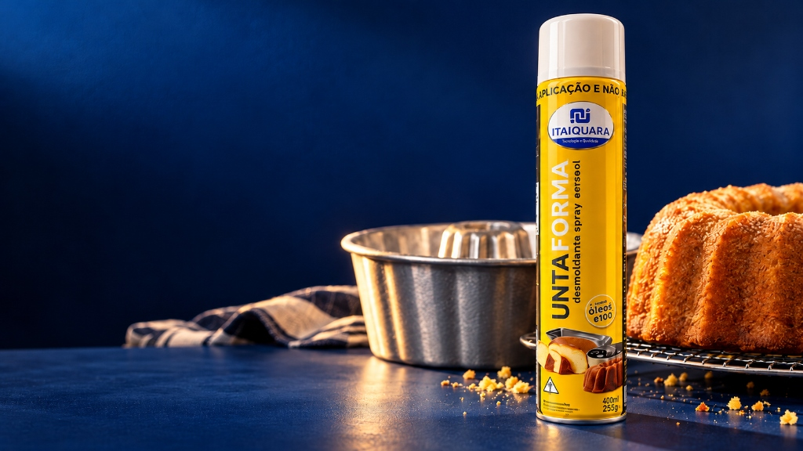
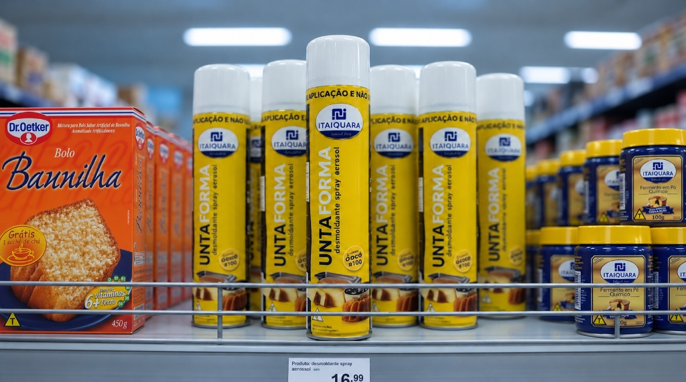
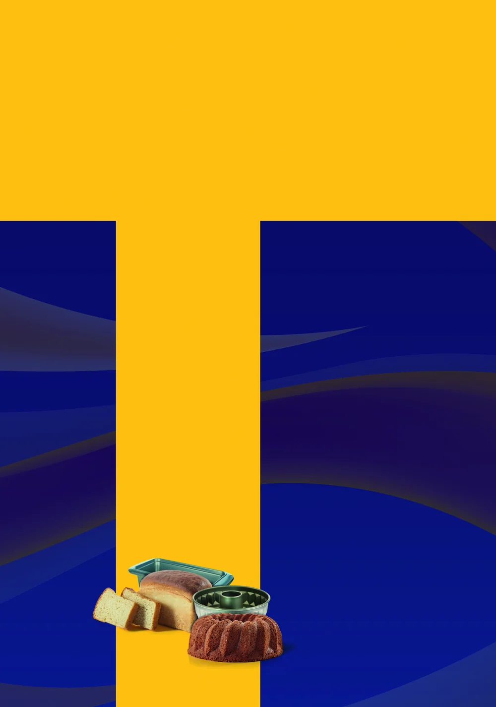
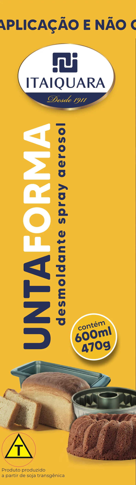
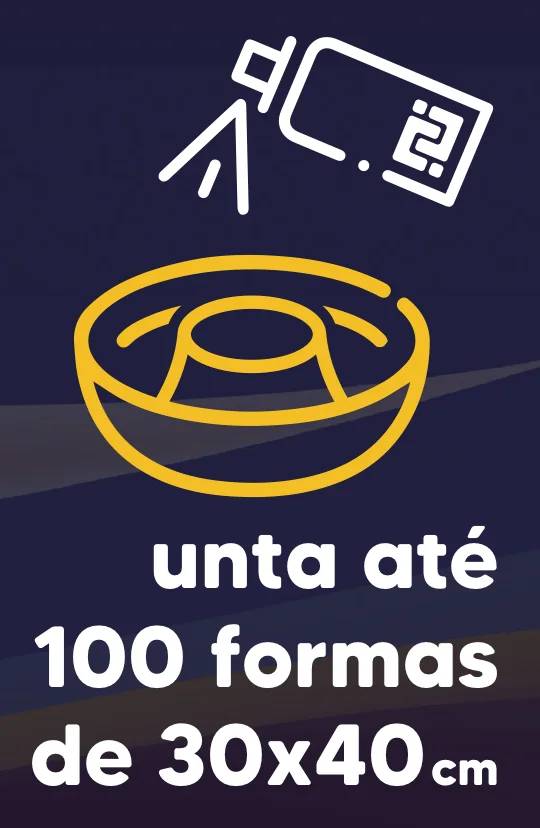
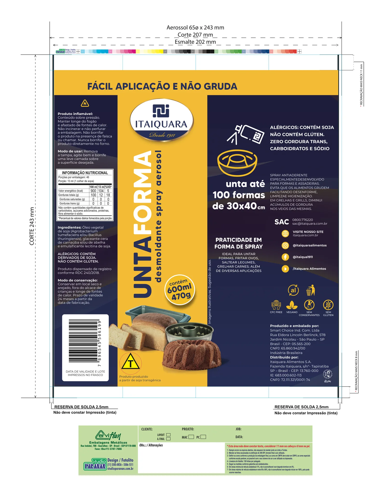

Case 13 · Embalagem · Direção de arte · Arte-final
Rótulo da lata aerossol do Untaforma 600 ml, o desmoldante em spray da Itaiquara. Fiz a criação completa: a composição em Photoshop, o layout, a organização dos textos obrigatórios e a arte-final no gabarito do fabricante da lata. O produto está à venda.
Embalagem real, produzida. Arte-final de setembro de 2022.
O problema
O Untaforma era um produto novo da Itaiquara: um desmoldante em spray para untar formas e assadeiras. A lata tem 65 mm de diâmetro e, de qualquer ângulo, mostra só um terço do rótulo. É nesse terço que a pessoa precisa reconhecer a marca, entender o produto e ver o tamanho.
01 · O Teste da Gôndola Real
Um design de embalagem só se prova no ponto de venda real (PDV), disputando a atenção visual lado a lado com caixas de misturas para bolo e fermentos químicos. A foto real abaixo demonstra a eficácia imediata do "T amarelo" e da tipografia vertical.

Foto real no PDV · VarejoO amarelo quente (Pantone 124 C) corta a poluição de embalagens vizinhas e atrai o olho do consumidor a mais de 3 metros de distância no corredor de panificação.
Latas aerossol sofrem rotação aleatória na reposição de estoque. Como a faixa superior "FÁCIL APLICAÇÃO E NÃO GRUDA" dá a volta em 360°, a promessa da categoria nunca fica escondida.
O nome "UNTAFORMA" na vertical aproveita os 243 mm de altura da lata, permitindo corpos tipográficos 3× maiores do que a diagramação horizontal tradicional.
02 · Um terço por vez
A coluna amarela da frente tem cerca de 65 mm, a largura que se lê de uma vez, e concentra o que identifica o produto. Os dois painéis azuis ficam para quem pega a lata e gira na mão: segurança, uso e nutrição de um lado, benefícios, contatos e selos do outro.
03 · Estrutura
A base da composição, montada no Photoshop, é um T: uma faixa amarela que contorna o topo e uma coluna que desce pela frente. O resto é o azul da marca, com ondas suaves para não ficar chapado.

desmoldante7.psd, vinculado à arte-final). Textos, logo e ícones entram por cima, no Illustrator.04 · Frente
Numa coluna de 65 mm de largura, um nome de nove letras na horizontal ficaria pequeno. Na vertical, ele usa a altura da lata e vira a maior coisa da frente.

05 · Rendimento
Logo depois da frente, o primeiro bloco do painel azul traduz o volume em uso: "unta até 100 formas de 30 × 40 cm", com dois ícones de linha, o spray e a forma, no amarelo da marca.

O número aparece grande e em branco sobre o azul. Os ícones são de traço simples, para continuar legíveis em 65 mm de lata e na impressão em metal. O bloco fica colado à frente, à direita: é a primeira coisa que aparece quando a lata gira para esse lado.
06 · Informação
Aerossol inflamável, alimento com tabela nutricional, alergênicos, transgênicos, código de barras, lote e validade: a lata carrega muita informação obrigatória. Cada grupo tem o seu lugar na volta da lata.
07 · Faca Gráfica & Produção Técnica
A arte foi fechada estritamente dentro do gabarito oficial do fabricante da lata e do fotolito, contemplando as reservas bilaterais de solda, as zonas de deformação por recravação e a janela óptica isolada para o código de barras EAN-13.

Faixas de 2,5 mm nas extremidades esquerda e direita sem aplicação de tinta, esmalte ou verniz, permitindo a fusão elétrica contínua do tubo de folha de flandres.
Folga de 11 mm na cabeça e 8 mm no pé preservam textos e selos de deformação física durante a prensagem mecânica do fundo e do bocal da válvula.
Módulo branco puro de 37,29 × 25,93 mm com barras a 100% Preto, posicionadas para garantir leitura instantânea em caixas automáticos e scanners biópticos.
7896545506199
Ver o produto numa loja ↗